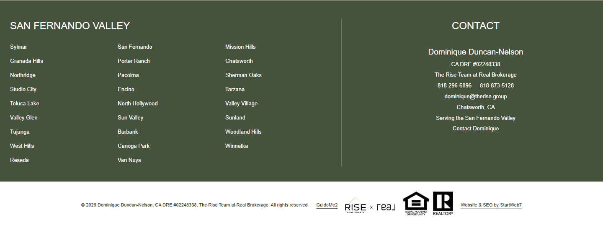
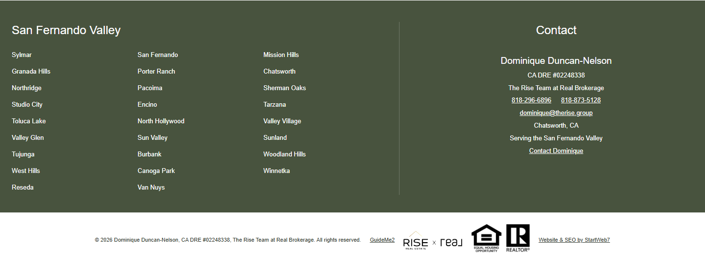
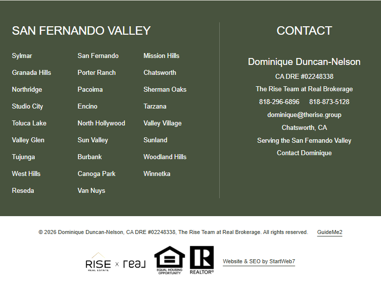
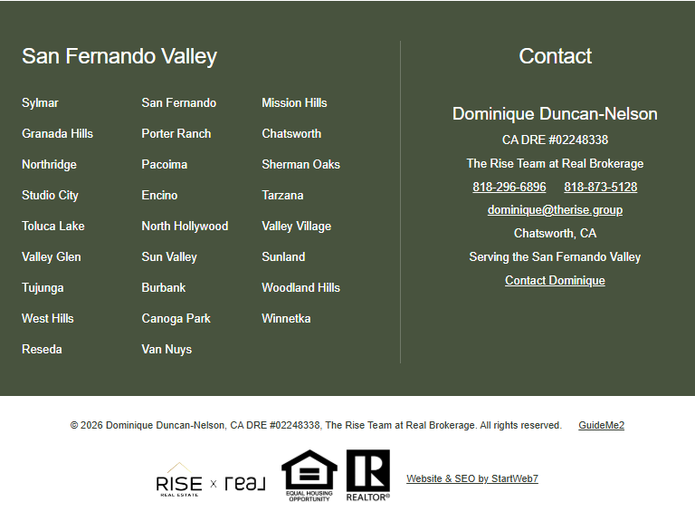
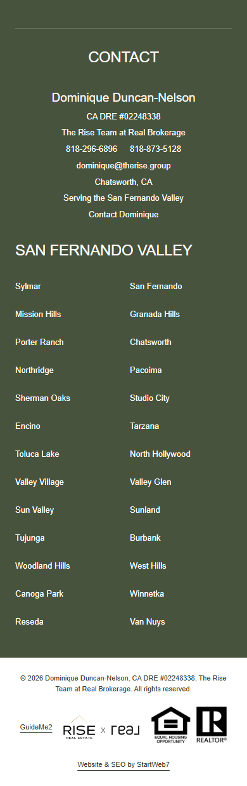
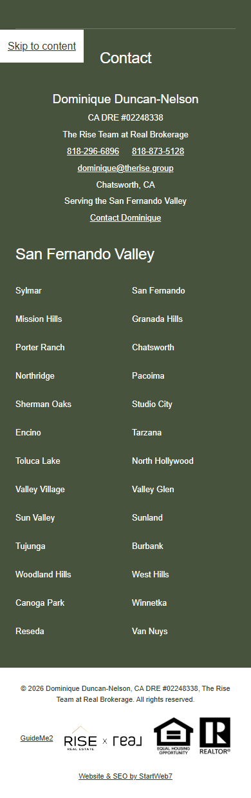

352 site pages standardized to the homepage footer. Same city links, contact details, branding and legal content. Eight representative page layouts match at desktop, iPad and phone widths.





